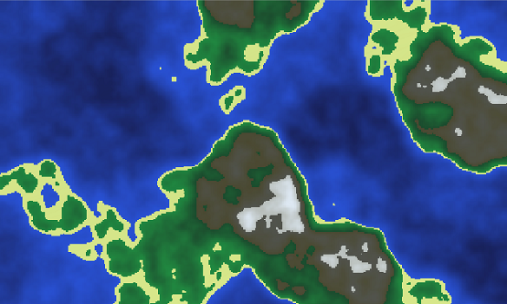
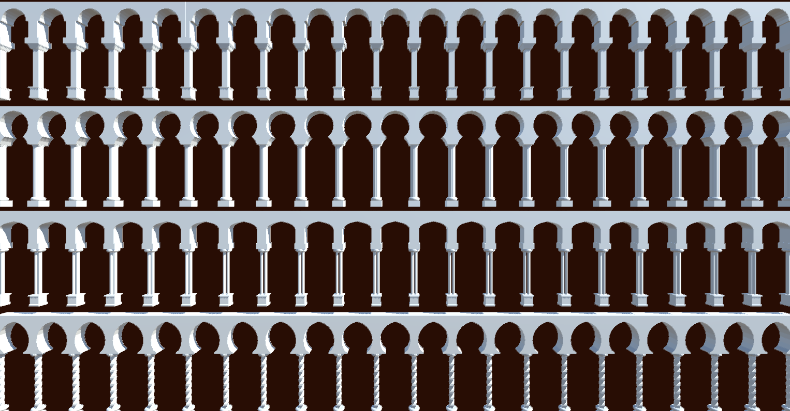
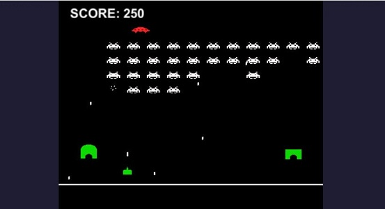

Random_genesis

- Scientific worldbuilding

Constructing fictional places has always been one of the main goals in the general field of procedural generation.
However, in most cases, even the generation of entire worlds has just been a necessary step in the creation of some other product. The generation tends therefore to focus on a few aspects that are core to the final product, while many variables are left aside.
The idea is to try and create large territories, where many different variables are scientifcally taken into account: geology, geography, the climate, ecology...
Possibly, through the application of some "Guns, Germs and Steel-like" mechanics it will be possible to simulate large scale interactions between humans and the environment, and among humans.
- Islamic architecture

In the broader field of procedural architecture generation, the unique characteristics of islamic architecture make it a good starting point.
Individual elements such as arches, domes, courtyards and minarets are assembled and placed by a "markov chain-like" algorithm.
- "Boggle-like" matrices
Experimenting with different generation algorithms for matrices of letters, trying to maximise the words that can be composed on them.
- Space Invaders AI

University project: the goal is to program a simple AI, based on a hierarchy of fuzzy logic controllers, capable of effectively playing a modified version of the classic arcade game Space Invaders.